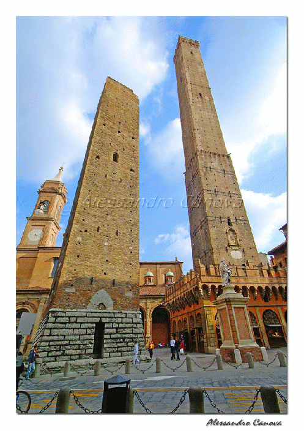
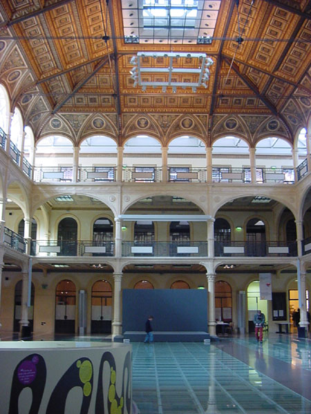

Index
[ guarda il video (circa 10 MB) ]
BOLOGNE

Bien qu'elle ne figure pas au palmarès des destinations touristiques en Italie, le plus souvent considérée uniquement comme une étape entre les villes les plus célèbres du Nord du pays (Milan, Turin, Venise) et celles du Sud (Florence, Rome, Naples, Palerme), Bologne mérite un détour.
Elle offre au visiteur attentif la beauté de son centre monumental, l'ambiance intellectuelle de son quartier universitaire, le dynamisme de ses activités commerciales et industrielles ainsi que sa vocation artisanale.
Elle s'avère donc un ville aux multiples visages où l'art de vivre et l'accueil chaleureux peuvent surprendre le touriste le plus exigeant.
Cette petite brochure que nous avons élaborée et que nous avons le plaisir de vous présenter, témoigne notre affection et notre sens d'appartenance à cette ville dont nous sommes fiers.
Veuillez, Messieurs, l'accepter comme un petit souvenir de votre visite.
Classe 5AE
Située dans la plaine du Pô, aux pieds des Apennins, Bologne est la capitale de l'Emilie-Romagne.
Fondée par les Etrusques sous le nom de Felsina, et colonisée par les Romains qui lui donnèrent le nom de Bononia, la ville a vécu son apogée au Moyen Age quand, conduite par un gouvernement communal indépendant, elle se developpa économiquement, se dota de remparts (dont les actuelles “portes” en sont le témoignage) et des tours élevées par les familles ennemies guelfes et gibelines.
Siège de la plus ancienne Université du monde, patrie de nombreux artistes et savants parmi lesquels Guglielmo Marconi, Bologne fascine les visiteurs qui peuvent flâner à l'abri de la pluie et de la canicule sous ses 47 kilomètres d'arcades, à la découverte de ses charmes.
LE CENTRE HISTORIQUE
Piazza Malpighi: Eglise de Saint François
Via Ugo Bassi: Les arcades
Via Indipendenza: Basilique de Saint Pierre
Piazza Re Enzo: Palais du Roi Enzo
Fontaine de Neptune
Piazza Maggiore: Basilique de Saint Pétrone
Palais Communal
Palais des Notaires
Palais de l' Achiginnasio
Arcades du Pavaglione
Via Rizzoli: Piazza di Porta Ravegnana
Les deux tours
Le ghetto juif
Le quartier universitaire
Palais de la Mercanzia (Loge des Marchands)
Via S. Stefano: Basilique de Saint Étienne
Via Castiglione: Les arcades suggestives
Les jardins Margherita
Basilique et couvent érigés en 1236 et achevés en 1263 par les moines mineurs sur un emplacement offert par la commune. Le nom de l'architecte reste inconnu, les sources mentionnent Marc de Brescia ou Giovanni de Brescia, ingénieur et architecte actif à Bologna en cette période. Sur le côté sud de l'église qui est orientée à est s'articule le complexe du couvent et derrière le choeur et le cimitière qui accueille les tombeaux de nombreux “Dottori” du Studio de Bologne. Aujourd'hui il reste le souvenir des monuments funéraires (Tombe dei Glossatori) (*) visibles de Piazza Malpighi.
En 1796 l'édifice subit le pillage des troupes françaises qui le transformèrent en caserme. Le couvent fut fermé, l'église déconsacrée et dépouillée des œuvres d'art qu'elle contenait.
Détruite pendant la Seconde Guerre Mondiale par un bombardement, elle fut ensuite restaurée et les travaux se terminèrent en 1949.
(*)En effet les “Maîtres” en Droit de l'Université de Bologne étaient appelés “Glossatori” parce que le mot “glossa” indiquait le commentaire, l'explication qu'ils notaient en marge des manuscrits du droit de Justinien.
La cathédrale de Saint Pierre est la cathédrale métropolitaine de la ville de Bologne.
Une église avait déjà été construite en 1028, à cộté d'un clocher paléromain à base circulaire. L'église a été détruite par un incendie en 1141, et elle a été rebậtie et consacrée par Lucio III en 1141. Par ordre du cardinal Gabriele Paleotti le bậtiment a été radicalement revu à partir de 1575.
Ces modifications ont été la cause de l'effondrement des voûtes en 1599.
Enfin l'église a été reconstruite au début du XVII siècle et entre 1743 et 1747 une nouvelle façade a été réalisée.
Aujourd'hui l'intérieur résulte baroque, et donne une impression de grandeur.
On peut admirer “L'annonciation” de Ludovico Carracci, une “Crucifixion” romane en bois et le “Cristo morto con le Marie piangenti” de Alfonso Lombardi ('500).
Contigu au palais du Podestat, le palais du roi Enzo, du XIIIe siècle.
Re Enzo, fils de l’empereur Frédéric II, y fut retenu en captivité pendant 23 ans, jusqu'à sa mort. Le palais possède une belle cour à l'intérieur et un magnifique escalier menant à une galerie à gauche de laquelle s’ouvre une cour dominée par la tour de l’Arengo
La construction de la fontaine, terminée en 1565, a été financée par les résidents et les commerçants des boutiques adjacentes.

Le palais de l’ancienne Bourse, abrite aujourd’hui une grande bibliothèque connue sous le nom de ex Sala Borsa.
Au milieu de la salle le plancher vitré permet d’apprécier les restes romains découverts pendant les travaux de réaménagement.
Antiquités
égyptiennes, gréco-romaines, étrusques. Près
du musée se trouve le palais de l’Archiginnasio, du XVIe
siècle., qui abrite une importante bibliothèque et le
Théâtre
Anatomique, salle d’anatomie de l'Université de Bologne,
bâtie au XVIIe siècle.
La basilique de Saint Petronio est l'église la plus célèbre et la plus majesteueuse de Bologne qui domine Place Maggiore.
Les dimensions imposantes (132 mètres de long et 60 mètres de large) en font la cinquième parmi les plus grandes églises au monde. Elle peut accueillir environ 28000 fidèles.
Dédiée au Saint patron de la ville, sa construction remonte à 1390, quand la commune chargeat Antonio de Vincenza d'édifier une grande église en style gothique.
Les travaux se prolongèrent pendant des siècles.
Après la réalisation de la première façade, en 1393, les travaux des chapelles latérales ont commencés et ont été terminés en 1479.
Les décorations de la nef centrale sont de Girolamo Rainaldi.
Mais les travaux ont été interrompus et repris plusieurs fois.
La basilique a été consacrée en 1954. Depuis l'an 2000 elle abrite les reliques du Saint Patron.
Le Palazzo d’Accursio appelé également Palais Communal, situé sur la Place Maggiore, est l’actuelle mairie de la ville de Bologne. Ce palais accueille le Musée Morandi. Le palais est en réalité un assemblage de bâtiments qui ont été réunis au cours des siécles, et qui était à l’origine la résidence de Francesco Accursio, juriste et maître en droit à l’Université de Bologne. En 1136 il devint la résidence des Anziani, puis par la suite le siège du gouvernement de la ville. Au XVe siècle, Fiorante Fioravanti agrandit le palais en ajoutant, entre autres, l’horloge de la Torre d’Accursio.
Le bâtiment fut également modifié pendant les premières années du XVIe siècle aprés la chute de la famille Bentivoglio.
À l’intérieur, le palais conserve la mémoire des événements historiques et politiques de la ville de Bologne. Au premier étage, dans l’actuelle salle du Conseil communal, des fresques, peintes par Angelo Michele Colonna et Gioacchino Pizzoli entre 1675 et 1677, décorent les murs.
C’est au deuxième étage, que se situe la salle Farnese, dans laquelle l’empereur Charles Quint fut couronné en 1530, et dont la décoration rappelle les événements historiques de la ville du Moyen Age au XVIIe siècle.
Il a été bâti entre 1384-1437, restauré et remanié à plusieurs reprises par l’architecte Antonio de Vincenzo. C’était le siège de la «Corporazione dei notai», où les dossiers et les documents concernant les ventes et les achats y étaient conservés.
Au niveau supérieur de l’édifice six admirables fenêtres et de petites colonnes en marbre blanc décorent la façade.
|
Symbole de Bologna, les
deux tours sont situées stratégiquement à
l'entrée de la ville sur l'ancienne rue Emilia. (48,16 m) car pendant les travaux, un affaissement du terrain a interrompu sa construction. |
|
|
|
|
|
|
|
|
|
Le ghetto juif de Bologna a été construit au XVIe siècle. Il a été voulu par le Pape Paolo IV pour séparer les habitations chrétiennes et les maisons juives. L'emplacement était compris entre via Zamboni et via Oberdan. A l'intérieur de ce ghetto il y avait des boutiques, des écoles, des Le cimetière est situé en via Oberdan, la grille de sortie est en vicolo Tubertini et celle d'accès en via dei Giudei. Dans cette rue il reste encore quelques symboles juifs peints sur les murs. La vieille
sinagogue était située en via dell'inferno qui était
la rue principale du ghetto. Aujourd'hui la sinagogue est située
en via dei Gombruti, près de la rue médiévale
via Barberia. Le ghetto a été détruit pendant
la Seconde Guerre mondiale, et il a été recontruit
en 1954. Le ghetto
juif de Bologna est un ensemble de petites rues étroites et
silencieuses avec peu d'arcades et surtout des maisons mises en
communication entre elles par de petits passages qui permettaient
d'accéder de l'une à l'autre sans descendre dans la
rue.temples.
|
|
Le cimetière est situé en via Oberdan, la grille de sortie est en vicolo Tubertini et celle d'accès en via dei Giudei. Dans cette rue il reste encore quelques symboles juifs peints sur les murs. La vieille
sinagogue était située en via dell'inferno qui était
la rue principale du ghetto. Aujourd'hui la sinagogue est située
en via dei Gombruti, près de la rue médiévale
via Barberia. Le ghetto a été détruit pendant
la Seconde Guerre mondiale, et il a été recontruit
en 1954. Le ghetto juif de Bologna est un ensemble de petites rues étroites et silencieuses avec peu d'arcades et surtout des maisons mises en communication entre elles par de petits passages qui permettaient d'accéder de l'une à l'autre sans descendre dans la rue. |
|
|
|
|
C'est en Rue Zamboni, aujourd'hui siège de nombreuses facultés universitaires, qu'en 1088 a été fondée la plus ancienne Université du monde, caractérisée, aux premiers siècles, par l'enseignement du droit. Des poètes et des intellectuels illustres, Dante, Pétrarque, Érasme de Rotterdam, Copernico l'ont fréquentée. Pami les professeurs qui y ont enseigné au fil des siècles, figurent Ulisse Aldrovandi, Marcello Malpighi, Luigi Galvani et les poètes Giosuè Carducci et Giovanni Pascoli.
A travers le Palais Malvezzi Campeggi , aujourd'hui siège de la Faculté de droit, on entre dans le quartier universitaire de la ville. On suit la rue jusqu'à Place Verdi, coeur de la vie universitaire bolonaise. Sur la gauche on peut admirer le Théâtre Communal. Le projet est de Antonio Bibiena et l'imposant palais a été édifié sur les restes de la résidence de la puissante famille Bentivoglio.
|
Inauguré en 1736, c'est le temple de la musique lyrique de Bologne. Dans
le quartier, les étudiants peuvent fréquenter la
bibliothèque universitaire qui compte |
|
Le
pape Pio IV commissionna à Charles Borromée la
construction du Palais de l'Archiginnasio comme siège de
l'Université,
Cet imposant édifice fut construit par
Antonio Morandi en 1562. Depuis 1838 il abrite la bibliothèque
principale de la ville.
Au niveau inférieur du Palais, le portique du Pavaglione, 139 m de long et 31 colonnes de blocs de pierre, représente la promenade mondaine des Bolonais. Le “Pavaglione” doit l'origine de son nom au mot français "pavillon", dérivé du mot latin "papilio" qui signifie tente. En effet, au XIIIe siècle, sous une grande tente que l'on dressait sur la place Galvani se déroulait l'ancienne foire de la soie.
La place qui s'ouvre juste en face du Pavaglione a été dédiée au savant bolonais Luigi Galvani.
Les murs de l'Archiginnasio sont décorés avec un grand nombre de blasons. Aux XVIe-XVIIe siècles, les nobles , les familles riches, les étudiants et les maîtres illustres se disputaient un petit coin de mur pour y afficher le blason de famille. Aujourd'hui on en compte presque 7.000.
a
Basilique de Saint Etienne est un complexe de bâtiments sacrés
parmi les plus suggestifs de Bologne. Elle se trouve sur la place
homonyme et elle est connue sous le nom de ”Sept églises”.
Selon la tradition Saint Pétrone, évêque de la ville, l'avait prévue comme le Saint Sépulcre de Jérusalem.
L'église
a longtemps abrité les reliques de Saint Pétrone qui
sont aujourd'hui dans la basilique de Saint Pierre. De nombreux
travaux au XIX-XX siècles ont modifié la structure
originale.
En parcourant rue Castiglione on apprécie les jeux d'ombre et de lumière des arcades. Pas de longues perspectives: c'est la surprise au fur et à mesure qu'on procède. De rares beautés sont cachées derrière les façades des palais qui longent la rue.
Les Jardins Margherita sont le parc public principal de Bologne.
L'inspiration des jardins à l'Anglaise ou romantique est évidente. L'architecte décida de donner un impact visuel fort, très suggestif.
Le petit lac, le chalet, le petit pont, la flore et la faune aquatique créent le charme d'une petite île artificielle.
Autrefois le jardin abritait aussi “un petit zoo”.
Aujourd'hui la place centrale abrite un petit observatoire astronomique et le WWF a aussi créé un espace didactique qui propose aux enfants de l'école primaire des promenades intéressantes.
Pour tous les Bolonais les Jardins Margherita constituent une oasis de détente et l'occasion d'une promenade agréable en plein centre ville.
Eglise de Saint Luc:
(5 km au Sud Ouest: quittez le centre ville par via Saragozza).
L'église est relieé à la ville par un portique de 666 arcades qui a été construit grâce à l'argent offert par les citoyens et que les Bolonais parcourent traditionnellement à pied.
La basilique s'éléve au sommet de la butte appeleé “Colle della Guardia” d'où on peut admirer un panorama magnifique de Bologne et des Apennins.
Dans le choeur on peut voir la Madonne de Saint Luc, une peinture du XIIème siècle en style byzantin, ornée des ex-voto des Bolonais.
Chaque année, au mois de mai, l'image sacrée descend, en procession , du sanctuaire à la Basilique de Saint Pierre où elle reste pendant une semaine pour bénir les fidèles qui vont lui rendre hommage.
L'Emilie-Romagne est une région qui répond à toutes les attentes d'un voyageur exigeant: sports, route des vins, stations thermales et villes d'art.
La côte:
les plages de l'Emilie-Romagne, offrent des vacances pour tous les goûts.
Les vacances à la mer sont combinées avec d'autres activités tels que le
bien-être et les thermes ouvertes toute l'année.
Les stations balnéaires les plus à la mode sont Rimini, Riccione et Milano Marittima.
Les villes d'art:
Ravenne: célèbre pour ses magnifiques mosaïques byzantins.
Ferrare et Modène: leurs centres historiques ont été inscrits au patrimoine mondial de l'umanité par l'UNESCO.
Parme: ville élégante, avec ses avenues boisées est la patrie de Giuseppe Verdi et du célèbre Prosciutto Crudo di Parma (jambon de Parme).
Reggio Emilia et Forlì: anciennes villes romaines.
Pour les gourmands: le Parmigiano Reggiano qui est encore produit selon des techniques qui ont peu changé au cours des siècles.
Cesena: sa “bibliothèque Malatestiana” est la seule bibliothèque restée intacte depuis 1447.
Les Apennins:
de belles promenades et des séjours-détente où le contact avec la nature et une cuisine variée et naturelle sont privilegiés.